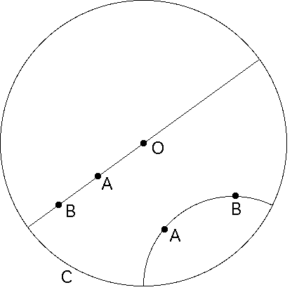

| We shall be using a model of hyperbolic geometry developed by Henri Poincare. |
| The space of this model is an open disc, the interior region bounded by a circle. |
| Points in this model are the (Euclidean) points of the disc, but in the model straight lines are not necessarily straight Euclidean lines. |
| The phrase "straight line" has such a strong visual meaning for most of us that we will use a different terminology to avoid confusion. |
| In any space where distance can be measured, a geodesic between two points is the shortest-distance path between those points. |
| For the Euclidean plane, geodesics are the straight line segments. |
| For the Poincare disc, geodesics are of two types: |
|
|
|  |
| Poincare disc with geodesics through points A and B. |
Return to background.